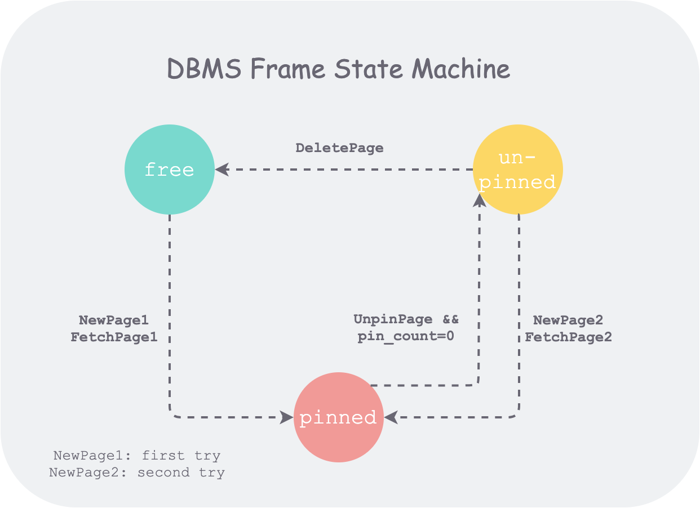

Project1：Buffer Pool
记录并顺便整理一下15-445的Project #1的实现思路，以及遇到的一些坑。
任务-实现一个Buffer Pool
任务内容：
- LRU Replacement Policy
- Buffer Pool Manager Instance
- Parrallel Buffer Pool Manager
这个project中需要实现三个功能模块，这三个功能模块共同实现了Buffer Pool的基本功能。
具体概念理解：
Page
Page是Bustub这个项目抽象出来的一个概念，对应磁盘上的page存储结构，Bustub已经实现好了Page，并且通过DiskManager来完成Page的读取，写入等一系列操作。
上图中简要展示了Page的几个重要属性，其中is_dirty_和pin_count_分别表示内存中该page的数据是否需要发生了更新（即需要刷到磁盘上）和该page的引用数（关系到Buffer Pool的evict机制），因此在实现Buffer Pool时需要时刻关注相应属性的变化。
page_id_为该page在磁盘和内存上的通用标识，data_保存page的数据。
Buffer Pool
Buffer Pool用于缓存从磁盘加载到内存中的数据，数据以page的形式进行表示，每一个page存储到Buffer Pool的每一个frame中。Buffer Pool中的frame是有限的，因此当载入page过多时，需要先将一部分frame中的page放回磁盘，并加载新的page到对应frame中，这就需要相应的replacement policy的支持。LRU就是一种非常经典的replacement policy。
总而言之，Buffer Pool是一种支持我们能够读取数据，并负责管理磁盘和内存数据交换的抽象结构，支持通过磁盘上的page_id从Buffer Pool中获取数据，并能够对数据进行缓存，且当载入数据过多时能够通过合理的机制实现数据的淘汰并交换，同时整个Buffer Pool也必须是线程安全的。
TASK #1 - LRU Replacer
一开始看到LRU的时候想到的是刷力扣时的LRU题的实现方法，通过双向链表，完全实现一个具有LRU替换策略的容器。但是这个project提供的接口却不是从上述思路去考虑的，容器本身其实是Buffer Pool，而LRU Replacer实际上是一个类似“回收站”一样的对象，Buffer Pool中不再引用的page会先放进这个回收站中，当回收站也放满后，才会通过淘汰机制将page刷回到磁盘。所以整个LRU替换策略实质上是通过Buffer Pool + LRU Replacer共同实现的。
这里借用网上博客中的图片进行进一步的说明：
上图为一个Page对应的状态变化的状态机，其有三种状态：
- free：说明该page不对应任何磁盘内容的数据，保存在Buffer Pool的
free_list_中，开始状态时free_list_中包含全部page。 - pinned：通过
NewPage和FetchPage两个方法可以读取到某个page_id_的磁盘page内容，此时该page就属于被引用的状态，page的pin_count_大于0时会一直处于该状态，在这个状态下，该page不应存放在relacer中。 - un-pinned：pinned的page
pin_count_为0时调用UnpinPage方法会转换到un-pinned状态，该page同时被放入replacer中（回收站），如果再执行DeletePage方法则该page上的内容会全部清空，重置所有meta-data，并放回free_list_中。
这里需要注意的是，通过replacer机制及其对应的un-pinned状态实现了对内存中page的复用，当调用
FetchPage方法时，由于un-pinned page还没有被真正的“删除”，因此可以通过回收站机制缓存一些page，这种缓冲机制可以提高整体系统的性能。
LRU Replacer具体思路
了解一个page对象的变化是正确设计LRU Replacer和Buffer Pool的核心。
Project需要我们实现四个接口：
- void Pin(frame_id_t frame_id)
- void Unpin(frame_id_t frame_id)
- bool Victim(frame_id_t *frame_id)
- size_t Size()
通过之前的分析，Pin和Unpin方法分别为将Buffer Pool中frame_id对应的frame从Replacer中移出，以及放入Replacer中的操作，Victim对应LRU的淘汰策略，淘汰一个frame_id上的page，并通过传出参数传回该frame_id。
因此Replacer需要一个容器，我们采用的是std::list来实现先进先出的逻辑，实际上std::deque应该也能满足要求，通过一个哈希表来记录Replacer中保存的frame，哈希表结构如下：
1 | std::unordered_map<frame_id_t, std::list<frame_id_t>::iterator> replacer_frame_map_ |
其中，key为frame_id，value为list的iterator，这样可以在Pin的时候快速定位到list中待删除的元素位置，使删除的复杂度达到O(1)，如果不这么做，无法通过HardTest。
线程安全的实现通过std::mutex:
1 | const std::lock_guard<std::mutex> lockGuard(latch_); // RAII |